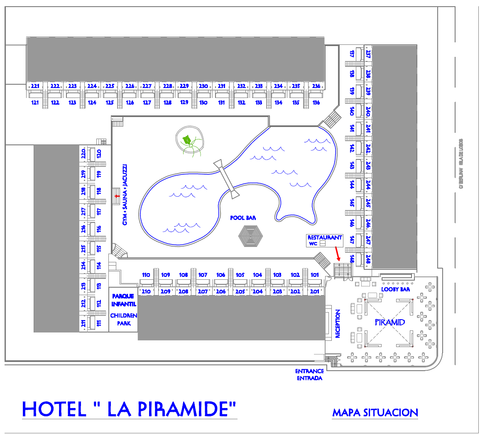

Sobre nosotros
Los Apartamentos
El Complejo consta de 96 apartamentos situados en dos plantas, planta a nivel de suelo y planta primera.
Todos los apartamentos tienen vistas a la piscina, que se encuentra situada en el centro.
La distribución del apartamento es de tres volúmenes, en la entrada y con vistas a la piscina tenemos un salón comedor con cocina totalmente equipada, a continuación un baño completo con bañera o ducha, y en la parte posterior se encuentra el dormitorio siendo esta la zona más tranquila del mismo.
La Imagen es orientativa, la ubicación del mobiliario puede no coincidir exactamente con esta imagen.Todos los apartamentos son de igual tamaño (40m2) y distribución de las habitaciones, tanto en planta baja como primera.
La ocupación máxima es de 2 adultos y dos niños o tres adultos, distribuidos en una habitación separada de dos camas individuales y un sofá cama situado en la sala de estar.
Salón comedor
Situado a la entrada del apartamento, se compone de una zona de estar con sofá y butaca individual mesa de centro y televisión con canales internacionales, también dispone de cocina americana con dos fogones eléctricos zona de fregadero y nevera con congelador y armarios con los utensilios básicos para poder cocinar, dispone de una mesa con taburetes.
En este espacio tenemos sillas y mesas de exterior para poder utilizar el balcón o la terraza según sea en planta baja o primera.

Hay un armario empotrado de dos puertas en el pasillo de acceso a la habitación.
Cuarto de baño
Disponen de bañera o ducha, lavabo con espejo, taza de váter y bidé. Disponemos de apartamentos en planta baja con plato de ducha y barras de sujeción para persona con capacidad limitada de movilidad, las puertas de acceso al baño son de 70 cm de ancho.
Dormitorio
Puede disponer de dos camas individuales o una cama de matrimonio de 150 cm. Tanto colchones como somieres se han renovado el último año. Dispone de una mesilla, un espejo, un posa maletas y una cómoda. También dispone de un armario empotrado de dos puertas con caja fuerte (con suplemento). Tiene una ventana que da a los jardines traseros del edificio.

Apartamentos superiores
Tenemos algunos Apartamentos Superiores que además de lo anterior disponen de microondas, campana extractora, televisión de 32”, mobiliario moderno, mayor equipamiento de cocina, estos se sitúan en las zonas más tranquilas y con mejores vistas
Los Apartamentos superiores disponen de cama grande de 150 cm con almohadas extra, ropa de cama exclusiva y mobiliario totalmente nuevo.
Los Apartamentos Superiores disponen de secador de pelo y varias amenitas extra.